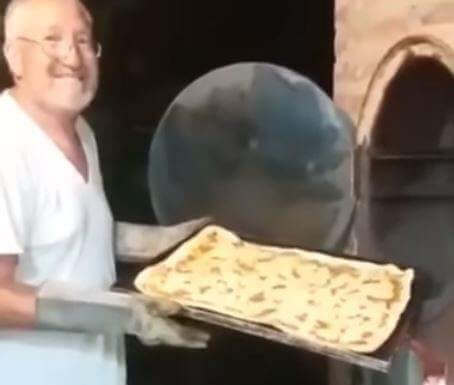

Fundada en 1986 por "Pipo" Gomez, ex soldado italiano quien cansado de guerras decidio venir a
nuestro pais persiguiendo su sueño de abrir una rotiseria y dando lugar a lo que somos hoy, el mejor
plantel para apaciguar tu apetito.
Ubicados en la esquina "Julio Argentino Roca" y "Manuel
José Joaquín del Corazón de Jesus Belgrano" estamos preparados para realizar ese plato gastronomico
que tanto te gusta.
Contamos con un amplio menú para tu goce y satisfaccion. Ya sea para
arrancar tu dia con un rico desayuno enérgico, un almuerzo completo para seguir tu dia, bebidas para
calmar tu sed o una cena para que cierres tu dia de la mejor forma
¡Te Esperamos!
¿Quienes Somos?
